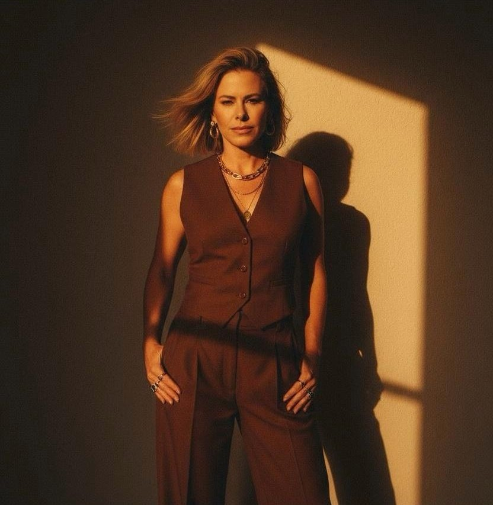
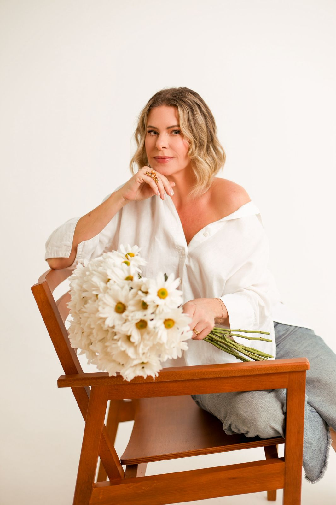
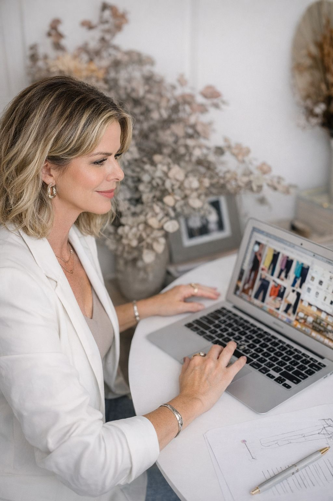
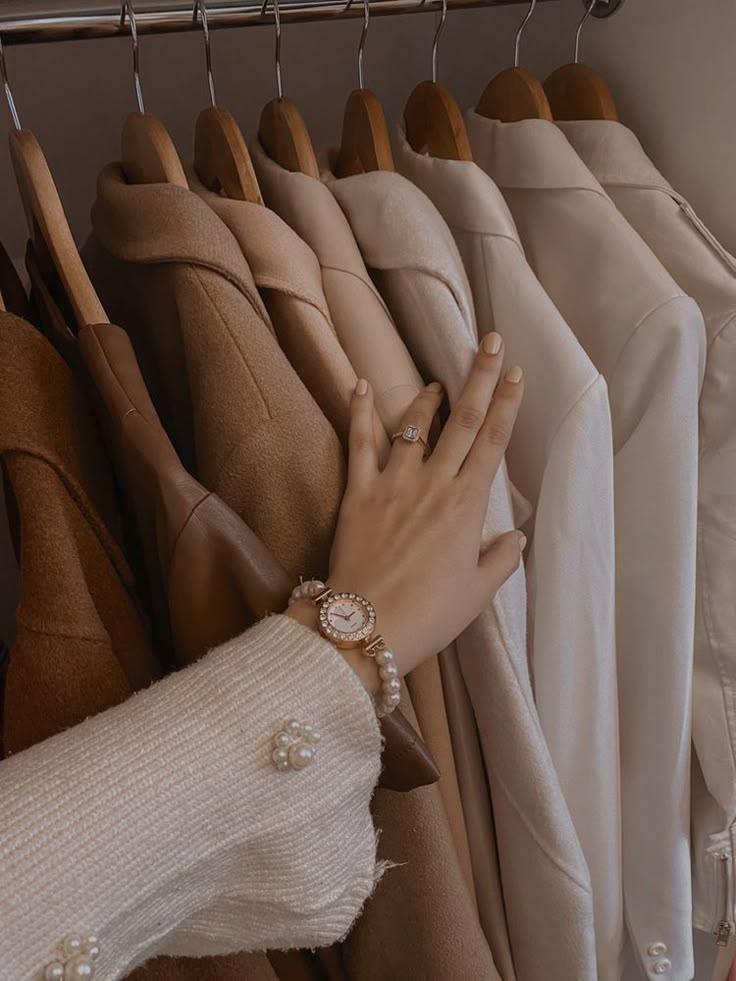
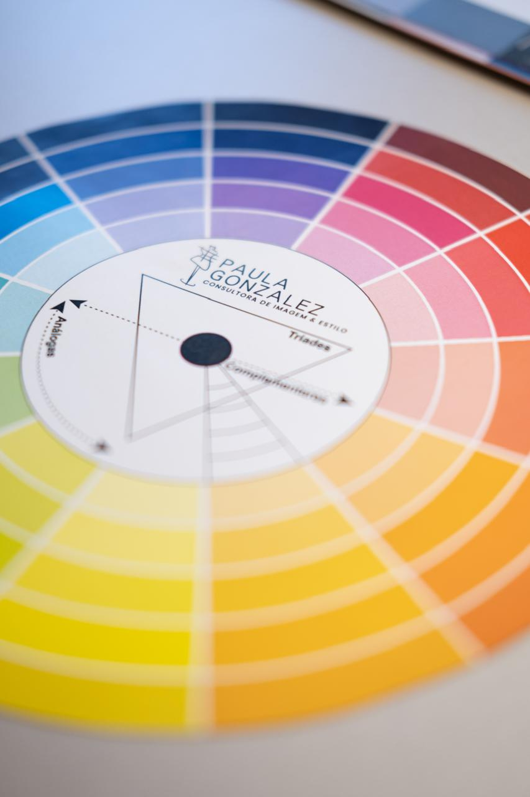
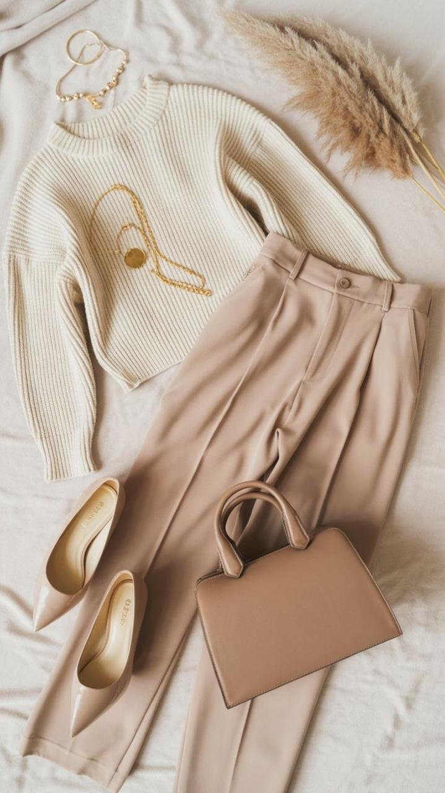
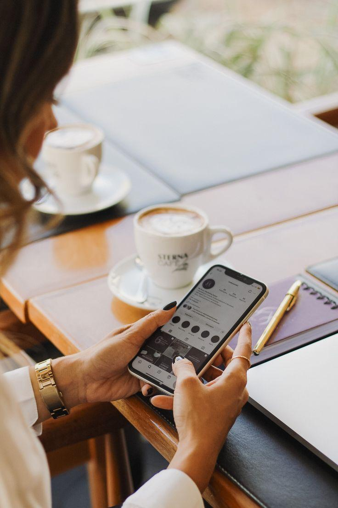
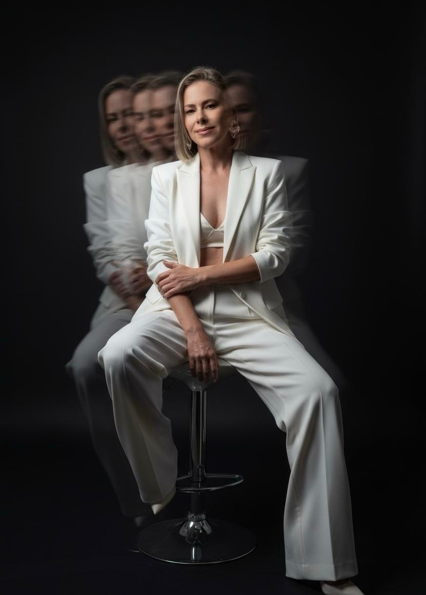

Consultoria de Imagem e Estilo
Consultoria de imagem para mulheres que desejam que sua presença comunique com clareza suas competências, valores e posicionamento. Uma imagem segura não acontece por acaso. Ela é construída com intenção

Sua imagem não representa quem você se tornou
Você evoluiu profissionalmente, mas sente que sua imagem ainda não acompanha esse momento.
Dúvida sobre o que vestir em contextos importantes
Reuniões, eventos, gravações ou presença no digital geram insegurança na hora de escolher o look.
Guarda-roupa sem direção
Você tem roupas, mas sente que falta coerência entre estilo, imagem e objetivos.
Falta de clareza sobre sua identidade visual
Não sabe exatamente qual imagem deseja transmitir.
Compras sem estratégia
Você compra peças que parecem bonitas, mas depois percebe que não conversam com o restante do guarda-roupa.

Sou consultora de imagem e estilo há mais de 10 anos e ajudo mulheres a desenvolverem uma imagem segura e intencional.
Ao longo da minha trajetória percebi algo muito claro: muitas mulheres extremamente competentes ainda não conseguem traduzir isso através da imagem.
Por isso meu trabalho vai além de roupas ou tendências.
Meu objetivo é orientar mulheres a construírem uma imagem alinhada às suas competências, valores e ao momento que vivem — para que sua presença comunique com clareza quem elas são.
Tudo feito 100% online de forma personalizada, adaptada à sua rotina.
Compreendemos seu momento, objetivos e o posicionamento que deseja comunicar.
Identificamos o que fortalece sua imagem e o que já não representa quem você é hoje.
Definimos estilo, modelagens e cores que traduzem sua presença de forma autêntica.
Orientação para composições, compras inteligentes e construção de um guarda-roupa coerente.
Um processo estratégico para desenvolver uma imagem segura e intencional, alinhada ao momento que você vive e à forma como deseja ser percebida.

Começamos com uma análise profunda da sua rotina, objetivos, estilo e mensagem que você deseja transmitir.
Aqui identificamos como sua imagem pode comunicar com mais clareza suas competências, valores e presença.
Avaliação completa do seu armário para entender o que fortalece sua imagem e o que já não representa quem você é hoje.
Organizamos combinações, identificamos lacunas e criamos mais clareza nas suas escolhas.


Realizamos sua análise de coloração pessoal de forma online, identificando as cores que mais valorizam sua beleza natural.
Você aprende quais tons iluminam sua pele, harmonizam com seus traços e fortalecem sua presença.
Essa etapa traz mais clareza para escolhas de roupas, maquiagem e acessórios.
Criação de combinações estratégicas para diferentes contextos da sua rotina, trabalho, eventos, compromissos profissionais ou sociais.
O objetivo é facilitar suas escolhas e garantir que sua imagem comunique com clareza quem você é.


Criamos combinações práticas para diferentes contextos da sua rotina e orientações para futuras compras.
O objetivo é construir um guarda-roupa funcional, elegante e alinhado à sua identidade.
A consultoria é um investimento na sua principal marca pessoal: você mesma.

Cada mulher possui história, objetivos e estilos únicos. O processo é totalmente adaptado à sua realidade.
Aqui não existem modismos e regras engessadas, apenas a tradução da sua identidade.
Um passo a passo estruturado para desenvolver uma imagem segura, intencional e coerente.
Não seguimos modismos. Construímos uma imagem que traduza quem você é.
Tudo é pensado para sua rotina, facilitando escolhas e trazendo mais segurança no dia a dia.
Sim! Todo o processo foi desenvolvido com uma metodologia inovadora para ser conduzido 100% à distância, mantendo a excelência, o nível de detalhe e o contato próximo, através de encontros por vídeo e materiais digitais de suporte.
Não obrigatoriamente. O objetivo primário é otimizar o guarda-roupa que você já possui ensinando novas formas de usá-lo. As compras são direcionadas apenas para peças-chave faltantes e de forma muito estratégica.
Esta consultoria é indicada para mulheres que desejam desenvolver uma imagem mais segura, coerente e alinhada ao momento que vivem — seja no ambiente profissional, social ou no digital.
O tempo pode variar de acordo com a sua disponibilidade para os encontros online, mas em média o processo completo de Consultoria de Estilo leva de 4 a 6 semanas para a entrega do dossiê final.
Agende sua consultoria e transforme a forma como você se veste.
Agendar Minha Consultoria